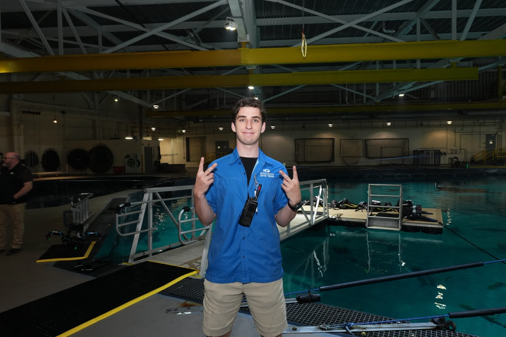
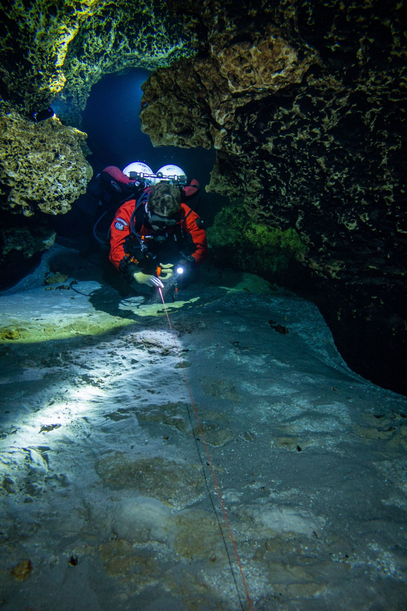
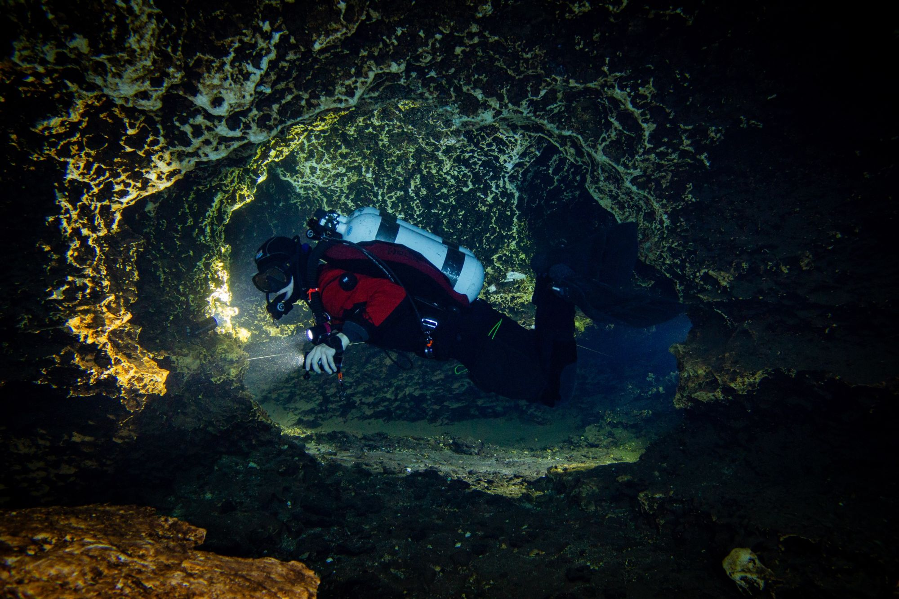
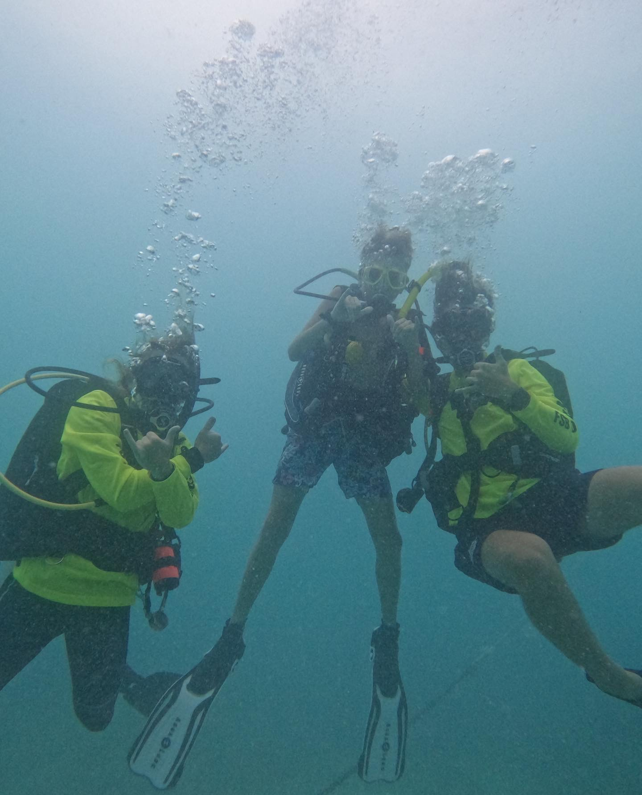

Hey, I’m Spencer Daniel. I’ve been diving at the Georgia Aquarium for over four years now, working on the Dive Immersion program, which means I get to dive with the whale shark. Not a bad place to spend a workday.
I became a PADI Open Water Scuba Instructor in 2021 and have taught more than 100 students since. Along the way I worked as a dive intern at Rainbow Reef and as a SCUBA instructor with Florida Sea Base down in the Keys.
In 2023 I became a full cave diver, so some of my diving happens in places where you can’t just swim straight up to the surface. On dry land, my background is in Industrial Engineering.


